KarhunenLoeveAlgorithm¶
-
class
KarhunenLoeveAlgorithm(*args)¶ Base class for Karhunen Loeve algorithms.
- Parameters
- covModel
CovarianceModel The covariance model.
- sfloat,

The minimal relative amplitude of the eigenvalues to consider in the decomposition wrt the sum of the preceeding eigenvalues. The default value is 0.
- covModel
See also
Notes
The Karhunen Loeve decomposition enables to build some finite approximations of stochastic processes which are optimal with respect to the norm
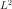
.We suppose that
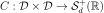
is a covariance function defined on , continuous at
, continuous at 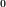
.The class
KarhunenLoeveAlgorithmenables to determine the solutions of the second kind Fredholm equation associated to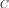
, ie to find the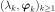
such that:(1)¶
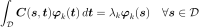
where
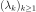
is a nonincreasing sequence of nonnegative values (the eigenvalues) and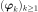
the associated sequence of eigenfunctions, normalized by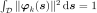
. They form an hilbertian basis of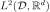
.The Mercer theorem shows that the covariance function writes:
(2)¶
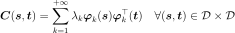
The threshold
 is used in order to select the most significant eigenvalues, ie all the eigenvalues such that (the infinite sum on the right being replaced by the sum of all computed eigenvalues in numerical algoritms):
is used in order to select the most significant eigenvalues, ie all the eigenvalues such that (the infinite sum on the right being replaced by the sum of all computed eigenvalues in numerical algoritms):(3)¶
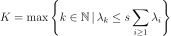
To solve (1), we use the functional basis
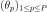
of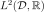
with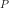
elements defined on . We search the solutions of type:
. We search the solutions of type:
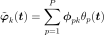
where
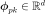
. We note: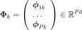
and
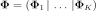
the matrix of the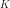
first modes of the Karhunen Loeve decomposition.The approximated Fredholm problem writes for all
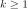
:which enables to define the residual function
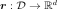
defined by(4)¶
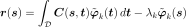
The Fredholm problem writes:
(5)¶
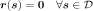
which is solved either by the Galerkin approach or the collocation approach.
The integrals in (4) can be evaluated with:
a
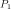
-approach: seeKarhunenLoeveP1Algorithm,a quadrature approach: see
KarhunenLoeveQuadratureAlgorithm,a singular values decomposition approach: see
KarhunenLoeveSVDAlgorithm.
Methods
getClassName(self)Accessor to the object’s name.
getCovarianceModel(self)Accessor to the covariance model.
getId(self)Accessor to the object’s id.
getImplementation(self, \*args)Accessor to the underlying implementation.
getName(self)Accessor to the object’s name.
getResult(self)Get the result structure.
getThreshold(self)Accessor to the threshold used to select the most significant eigenmodes.
run(self)Launch the algorithm.
setCovarianceModel(self, covariance)Accessor to the covariance model.
setName(self, name)Accessor to the object’s name.
setThreshold(self, threshold)Accessor to the limit ratio on eigenvalues.
-
__init__(self, *args)¶ Initialize self. See help(type(self)) for accurate signature.
-
getClassName(self)¶ Accessor to the object’s name.
- Returns
- class_namestr
The object class name (object.__class__.__name__).
-
getCovarianceModel(self)¶ Accessor to the covariance model.
- Returns
- covModel
CovarianceModel The covariance model.
- covModel
-
getId(self)¶ Accessor to the object’s id.
- Returns
- idint
Internal unique identifier.
-
getImplementation(self, *args)¶ Accessor to the underlying implementation.
- Returns
- implImplementation
The implementation class.
-
getName(self)¶ Accessor to the object’s name.
- Returns
- namestr
The name of the object.
-
getResult(self)¶ Get the result structure.
- Returns
- resKL
KarhunenLoeveResult The structure containing all the results of the Fredholm problem.
- resKL
Notes
The structure contains all the results of the Fredholm problem.
-
getThreshold(self)¶ Accessor to the threshold used to select the most significant eigenmodes.
- Returns
- sfloat, positive
The threshold
.
Notes
OpenTURNS truncates the sequence at the index defined in (3).
-
run(self)¶ Launch the algorithm.
Notes
It launches the algorithm and creates a
KarhunenLoeveResult, structure containing all the results.
-
setCovarianceModel(self, covariance)¶ Accessor to the covariance model.
- Parameters
- covModel
CovarianceModel The covariance model.
- covModel
-
setName(self, name)¶ Accessor to the object’s name.
- Parameters
- namestr
The name of the object.